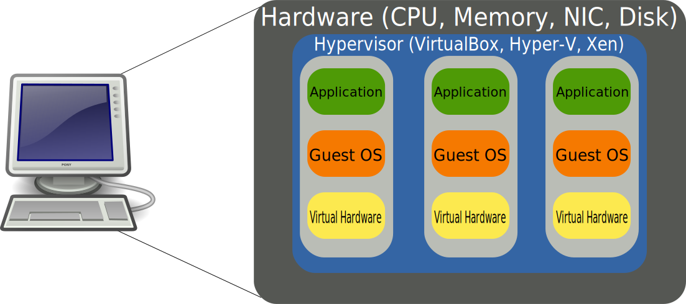
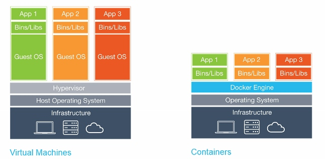

Akeneo development
with Docker
Damien Carcel
What is Docker
- Docker is not (really) a virtual machine (VM)

What is Docker
- Docker is a container manager
- Based on cgroups and Linux namespaces
- cgroups: resources management
- namespace: isolation

- Other container managers you may know: chroot, systemd-nspawn, LXC
What is Docker

Virtual machines vs. containers
What is Docker
- Docker specificity
- Dockerfile → Image → Containers
- Only one process in the container
How to use a docker container
- Let's take a real use case with my own computer
- PHP 7.0
- FPM + nginx
- MariaDB 10
- MongoDB 3.2…
- Let's create (and work with) a MongoDB container
How to use a docker container
FROM debian:jessie
MAINTAINER Damien Carcel <damien.carcel@akeneo.com>
ENV DEBIAN_FRONTEND noninteractive
# Install MongoDB
RUN apt-get update && \
apt-get --yes --quiet install mongodb && \
apt-get clean && apt-get --yes --quiet autoremove --purge && \
rm -rf /var/lib/apt/lists/* /tmp/* /var/tmp/*
# Run mongod in foreground
RUN mkdir /data && mkdir /data/db
CMD ["/usr/bin/mongod", "--nojournal"]
$ docker build -t mymongo .
How to use a docker container
FROM debian:jessie
MAINTAINER Damien Carcel <damien.carcel@akeneo.com>
ENV DEBIAN_FRONTEND noninteractive
# Install MongoDB
RUN apt-get update && \
apt-get --yes --quiet install mongodb && \
apt-get clean && apt-get --yes --quiet autoremove --purge && \
rm -rf /var/lib/apt/lists/* /tmp/* /var/tmp/*
EXPOSE 27017
# Run mongod in foreground
RUN mkdir /data && mkdir /data/db
CMD ["/usr/bin/mongod", "--nojournal"]
How to use a docker container
$ docker run --name akeneo-mongo -p 27018:27017 mymongo
# app/config/pim_parameters.yml
parameters:
...
pim_catalog_product_storage_driver: doctrine/mongodb-odm
mongodb_server: 'mongodb://localhost:27018'
mongodb_database: akeneo_pim
...
Akeneo on full docker containers
- What containers do we need?
- MySQL
- MongoDB
- Apache + PHP
- Selenium + Firefox
- Those containers have to communicate with each other
- We also need to make the PIM communicate with them
Akeneo on full docker containers
- Docker networks for communication
$ docker network create akeneo
$ docker run --name akeneo-mongo --network akeneo -d mymongo
Akeneo on full docker containers
- Comes docker hub to the rescue!
Akeneo on full docker containers
FROM debian:jessie
MAINTAINER Damien Carcel <damien.carcel@akeneo.com>
ENV DEBIAN_FRONTEND noninteractive
# Install Apache + mod_php and some PHP extensions
RUN apt-get update && \
apt-get --yes --quiet install \
curl git imagemagick wget sudo perceptualdiff ca-certificates \
apache2 libapache2-mod-php5 php5-cli \
php5-apcu php5-curl php5-gd php5-imagick php5-intl php5-mongo php5-mcrypt php5-mysql php5-xdebug && \
apt-get clean && apt-get --yes --quiet autoremove --purge && \
rm -rf /var/lib/apt/lists/* /tmp/* /var/tmp/*
# Add a "docker" user
RUN sudo useradd docker --shell /bin/bash --create-home \
&& sudo usermod -a -G sudo docker \
&& echo 'ALL ALL = (ALL) NOPASSWD: ALL' >> /etc/sudoers \
&& echo 'docker:secret' | chpasswd
# Configure PHP
RUN php5enmod mcrypt && php5dismod xdebug
RUN sed -i "s/;date.timezone =/date.timezone = Europe\/Paris/" /etc/php5/cli/php.ini && \
sed -i "s/;date.timezone =/date.timezone = Europe\/Paris/" /etc/php5/apache2/php.ini && \
sed -i "s/memory_limit = .*/memory_limit = 2G/" /etc/php5/cli/php.ini && \
sed -i "s/memory_limit = .*/memory_limit = 512M/" /etc/php5/apache2/php.ini && \
sed -i "s/upload_max_filesize = .*/upload_max_filesize = 20M/" /etc/php5/cli/php.ini && \
sed -i "s/upload_max_filesize = .*/upload_max_filesize = 20M/" /etc/php5/apache2/php.ini && \
sed -i "s/post_max_size = .*/post_max_size = 21M/" /etc/php5/cli/php.ini && \
sed -i "s/post_max_size = .*/post_max_size = 21M/" /etc/php5/apache2/php.ini
# Configure Apache
RUN a2enmod rewrite && \
echo "ServerName localhost" >> /etc/apache2/apache2.conf
RUN sed -i "s/export APACHE_RUN_USER=www-data/export APACHE_RUN_USER=docker/" /etc/apache2/envvars && \
sed -i "s/export APACHE_RUN_GROUP=www-data/export APACHE_RUN_GROUP=docker/" /etc/apache2/envvars && \
chown -R docker: /var/lock/apache2
# Install composer
RUN curl -sSL https://getcomposer.org/installer | php -- --install-dir=/usr/local/bin --filename=composer
RUN chmod +x /usr/local/bin/composer
# Add some utilities
COPY pim-initialize.sh /usr/local/bin/pim-initialize
RUN chmod +x /usr/local/bin/pim-initialize
# Add Akeneo VHOST as default
COPY akeneo-behat.local.conf /etc/apache2/sites-available/000-default.conf
# Expose Apache to the host
EXPOSE 80
# Define "docker" as current user
USER docker
# Run apache in foreground
CMD ["sudo", "/usr/sbin/apache2ctl", "-D", "FOREGROUND"]
Akeneo on full docker containers
$ docker network create akeneo
$ docker build -t mymongo .
$ docker run --name akeneo-mongo -d --network akeneo mymongo
$ docker run --name mysql -d --network akeneo \\
-e MYSQL_ROOT_PASSWORD=root \\
-e MYSQL_DATABASE=akeneo_pim \\
-e MYSQL_USER=akeneo_pim \\
-e MYSQL_PASSWORD=akeneo_pim \\
mysql:5.5
Akeneo on full docker containers
$ docker run --name selenium -d --network akeneo -p 5900:5900 \\
-v /home/damien/Development/PIMs/PimCommunity16:/home/docker/pim \\
-v /tmp/behat/screenshots:/tmp/behat/screenshots \\
selenium/standalone-firefox-debug:2.53.1-beryllium
$ docker run --name akeneo -d --network akeneo -p 8080:80 -w /home/docker/pim \\
-e BEHAT_TMPDIR="/home/docker/pim/app/cache/tmp" \\
-v /home/damien/Development/PIMs/PimCommunity16:/home/docker/pim \\
-v /tmp/behat/screenshots:/tmp/behat/screenshots \\
-v /home/damien/.composer:/home/docker/.composer \\
apache-php
Akeneo on full docker containers
Akeneo on full docker containers
There must be another way
Docker compose

Docker compose
# docker-compose.yml
version: '2'
services:
akeneo:
image: carcel/akeneo:php-5.6
networks:
- akeneo
mysql:
image: mysql:5.5
networks:
- akeneo
networks:
akeneo: ~
Docker compose
version: '2'
services:
akeneo:
image: carcel/akeneo-behat:php-5.6
depends_on:
- mysql
- selenium
user: docker
environment:
- BEHAT_TMPDIR=/home/docker/pim/app/tmp
volumes:
- .:/home/docker/pim
- /home/damien/.composer:/home/docker/.composer
- /tmp/behat/screenshots:/tmp/behat/screenshots
working_dir: /home/docker/pim
ports:
- '8080:80'
networks:
- akeneo
selenium:
image: selenium/standalone-firefox-debug:2.53.1-beryllium
volumes:
- .:/home/docker/pim
ports:
- '5900:5900'
networks:
- akeneo
mysql:
image: mysql:5.5
environment:
- MYSQL_ROOT_PASSWORD=root
- MYSQL_USER=akeneo_pim
- MYSQL_PASSWORD=akeneo_pim
- MYSQL_DATABASE=akeneo_pim
networks:
- akeneo
networks:
akeneo: ~
Docker compose
# app/config/parameters_test.yml
parameters:
database_driver: pdo_mysql
database_host: mysql
database_port: null
database_name: akeneo_pim
database_user: akeneo_pim
database_password: akeneo_pim
locale: en
secret: ThisTokenIsNotSoSecretChangeIt
installer_data: PimInstallerBundle:minimal
# pim_catalog_product_storage_driver: doctrine/mongodb-odm
# mongodb_server: 'mongodb://akeneo-mongo:27017'
# mongodb_database: akeneo_pim
Docker compose
# behat.yml
default:
paths:
features: features
context:
class: 'Context\FeatureContext'
parameters:
base_url: 'http://akeneo/'
timeout: 10000
window_width: 1280
window_height: 1024
extensions:
Behat\MinkExtension\Extension:
default_session: symfony2
show_cmd: chromium-browser %s
selenium2:
wd_host: 'http://selenium:4444/wd/hub'
base_url: 'http://akeneo/'
files_path: 'features/Context/fixtures/'
Behat\Symfony2Extension\Extension:
kernel:
env: behat
debug: false
SensioLabs\Behat\PageObjectExtension\Extension: ~
Docker compose
- How to use it?
$ docker-compose up -d
$ docker-compose exec akeneo composer update
$ docker-compose exec akeneo pim-initialize
$ docker-compose exec akeneo bin/behat features/whatever/you/want.feature
Docker compose
- How to use it?
$ docker-compose down -v
$ docker rm -f -v $(docker ps -a -q)
$ docker rmi -f $(docker images -a -f "dangling=true" -q)
Questions?